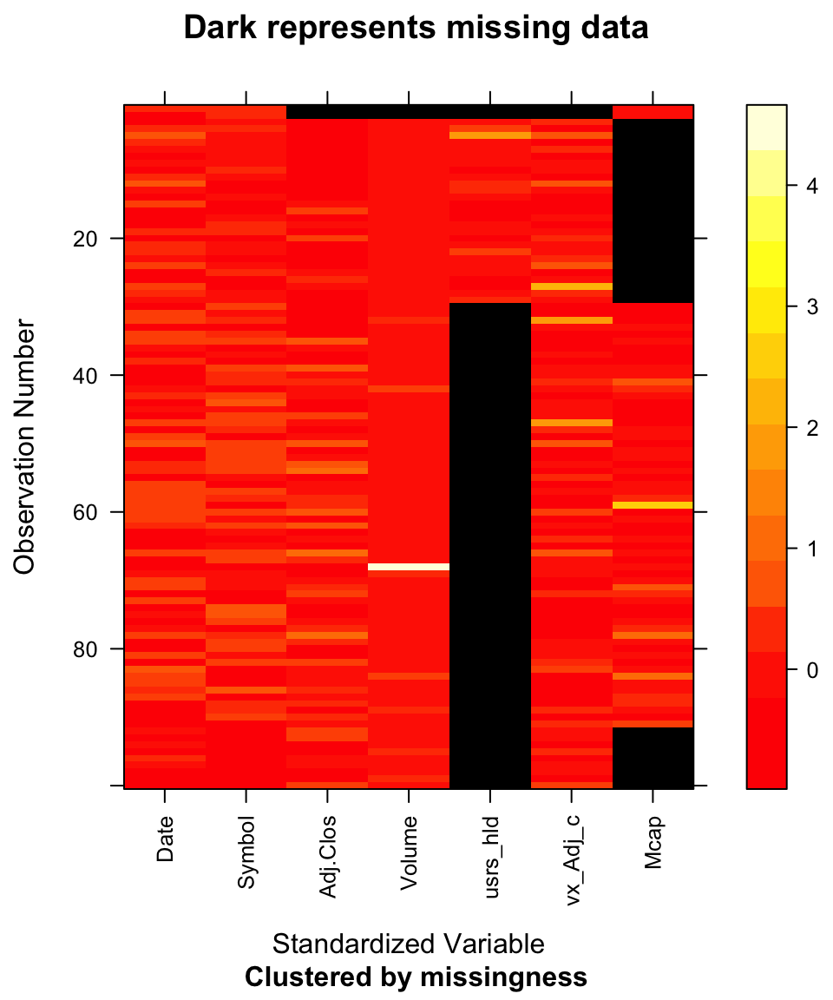

Chapter 4 Missing values
In this section we will explore the missing values in our dataset and offer some hypotheses on why this might be happening. We will also investigate if we have missing patterns and try to understand the cause behind that.
4.1 Overview of missing values
First we read in the raw data. We haven’t performed any tranformations to the dataframe apart from combining the different datasources.
In order to start exploring missing values we will look at the ratio of the number of NAs in each column:
## Date Symbol Adj.Close Volume users_holding
## 0.000000000 0.000000000 0.003158734 0.003158734 0.062136036
## vix_Adj_close Mcap
## 0.003112053 0.022546827We can see immediately that we have a very low percentage in missing values. The columns in our dataframe that have the most missing entries are Mcap and users_holding with around 2% and 6% missing values respectively.
4.2 Visualizing missing values per row
One way of visualizing the missing patterns by row is by using the mi package. For the purposes of the visualization of this section, we first drop all rows that do not have missing values.
Since we have almost 21k missing values we randomly subsampled the missing values dataframe to create a smaller one. In order to get a first idea of the shape of the missing values we can take a look at the following graph:
## NOTE: The following pairs of variables appear to have the same missingness pattern.
## Please verify whether they are in fact logically distinct variables.
## [,1] [,2]
## [1,] "Adj.Close" "Volume"
## [2,] "Adj.Close" "vix_Adj_close"
## [3,] "Volume" "vix_Adj_close"
We can see that most missing values appear on the users_holding and Mcap columns and a combination of the two. Another block of missing values is formed with the following collums Adj.Close,Volume,vix_Adj_close and users_holding.
We realize that since this is a random sub-sample of the dataframe and that there might be more missing patterns. Nevertheless, the above graph captures the strongest missing-value trends.
Taking a closer look on those patterns:
## NOTE: The following pairs of variables appear to have the same missingness pattern.
## Please verify whether they are in fact logically distinct variables.
## [,1] [,2]
## [1,] "Adj.Close" "Volume"## Mcap
## 4702
## users_holding
## 14079
## users_holding, Mcap
## 1094
## Adj.Close, Volume
## 12
## Adj.Close, Volume, users_holding, vix_Adj_close
## 800To summarize the above:
We can see standalone missing values for
users_holdingandMcapwith the highest counts.There is a pattern when both
users_holdingandMcapare missing.Another pattern lies in missing
Adj.CloseandVolume.The last pattern we observe is missing all of the following:
Adj.Close,Volume,users_holding,vix_Adj_close.
4.3 Frequency of patterns
We take another look at our missing patterns. Here, the rows represent a pattern and the columns represent the column level missing values. We have sorted the graph by most to least common missing pattern and the most to least common missing row.
4.4 Interpreting the results
Pattern 1: Missing users_holding:
In our opinion there is not really intuition on why users_holding is missing. We assume that the Robintrack didn’t report this variable on certain days.We assume that this value is missing completely at Random.
Pattern 2: Missing Mcap:
Similarly for Mcap. We assume that it is missing completely at Random.
Pattern 3: Missing Mcapand users_holding:
A combination of the above two explanations.
Pattern 4: Missing Adj.Close, Volume, users_holding andvix_Adj_close:
This is a more meaningful pattern. Our hypothesis is that those entries are missing at the same time because the company was not part of the S&P500 on those specific dates. Note we still have Mcap data because that is pulled from Bloomberg versus Yahoo Finance. Bloomberg can recognize a name change of ticker whereas Yahoo does not.
Pattern 5: Missing Adj.Close and Volume:
Our assumption is that Yahoo Finance didn’t report these values. We have values for the VIX, Market Cap and users holding therefore we should also have values for Adj.Close and Volume.
We confirmed our assumption by comparing those missing dates against another source which had the correct values for those dates.
4.5 Dealing with missing values
We decided to remove the rows that contained missing values.